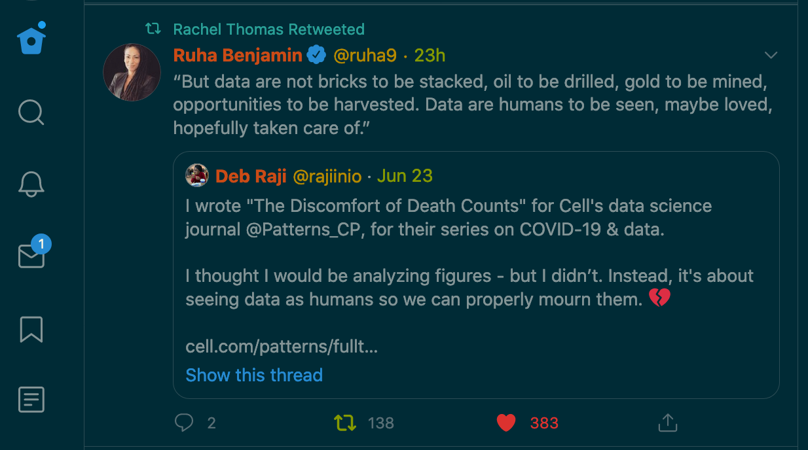

Not that anyone asked for it, but I made a custom stylesheet for Twitter to give it the classic Solarized colors (in dark mode, of course).

My knowledge of CSS is relatively slim - it doesn't go much further than the standard selection rules and core styling attributes - but Firefox's always-reliable developer tools proved more than adequate. I suspect that reverse-engineering a CSS file after it's been spit out by Sass/Less isn't a broadly applicable skill, but it made for a fun puzzle to spend an afternoon completing.
The code, for what it's worth, is posted to my GitHub, though it sounds like the future of user-provided stylesheets in Firefox may be waning anyhow.